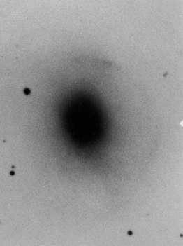

Deep (long exposure) images of what appear to be regular galaxies often reveal structures too faint to be otherwise seen. Common amongst these structures are faint ‘ripples’ of increased brightness which are referred to as ‘shells’.
|

NGC 7585 (Arp 223) shows clear signs of distrubance as well as shells.
Credit: The Arp Atlas of peculiar galaxies |
Shells are created through dynamical friction in galaxies that have recently undergone a merger. As the smaller galaxy is swallowed by the larger galaxy and settles into its new environment, it tends to oscillate about the overall centre of mass with steadily decreasing amplitude. At each of the extremes of its decaying orbit, dynamical friction causes a slight build up in the density of stars. It is these slight overdensities that are observed as ‘shells’. Careful analysis of these shells allows us to probe the structure of the galaxy as a whole, and also enables the reconstruction of the path of the absorbed galaxy billions of years after the event. Shells are therefore an extremely powerful probe of both the merger history of a galaxy and its dynamical structure.